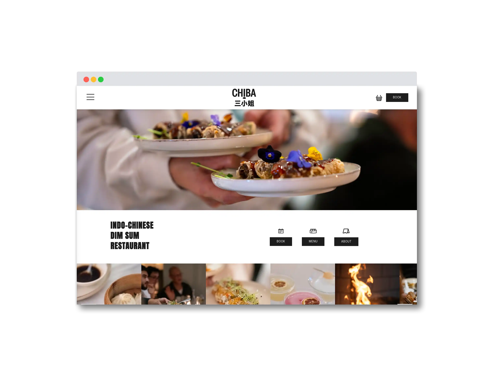
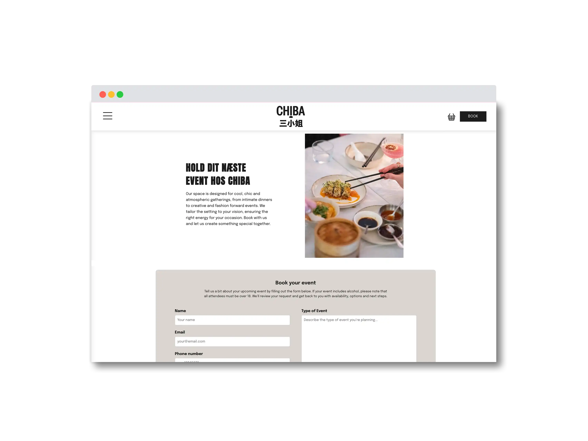
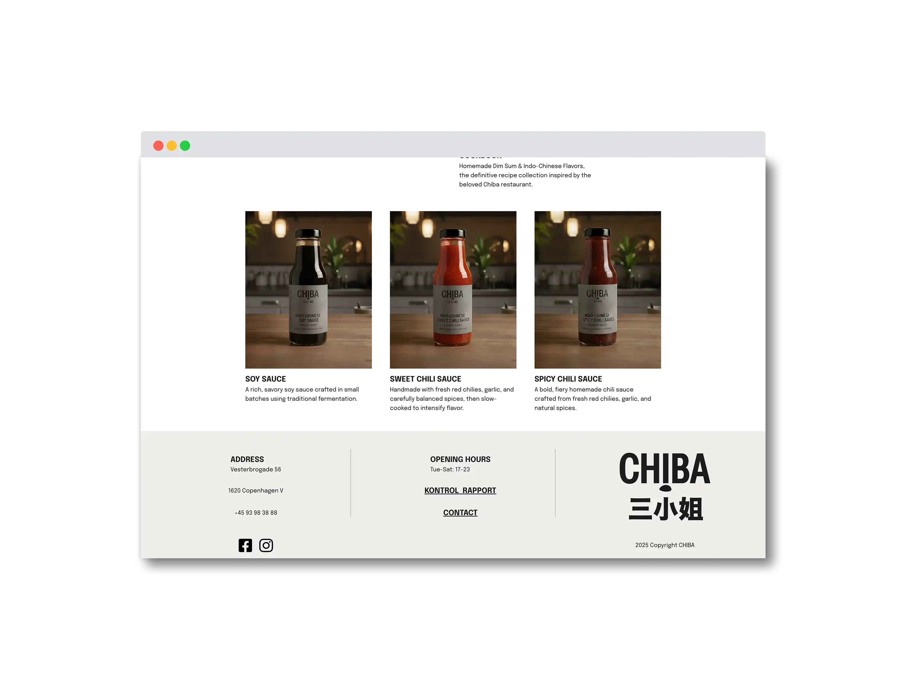
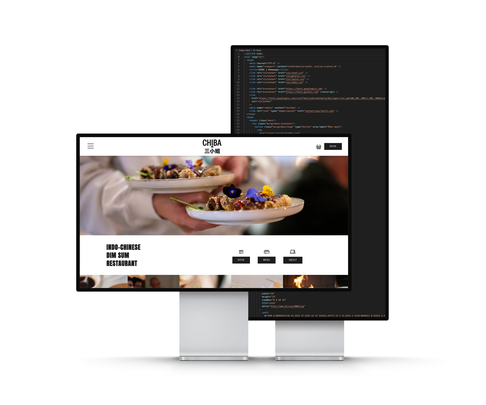
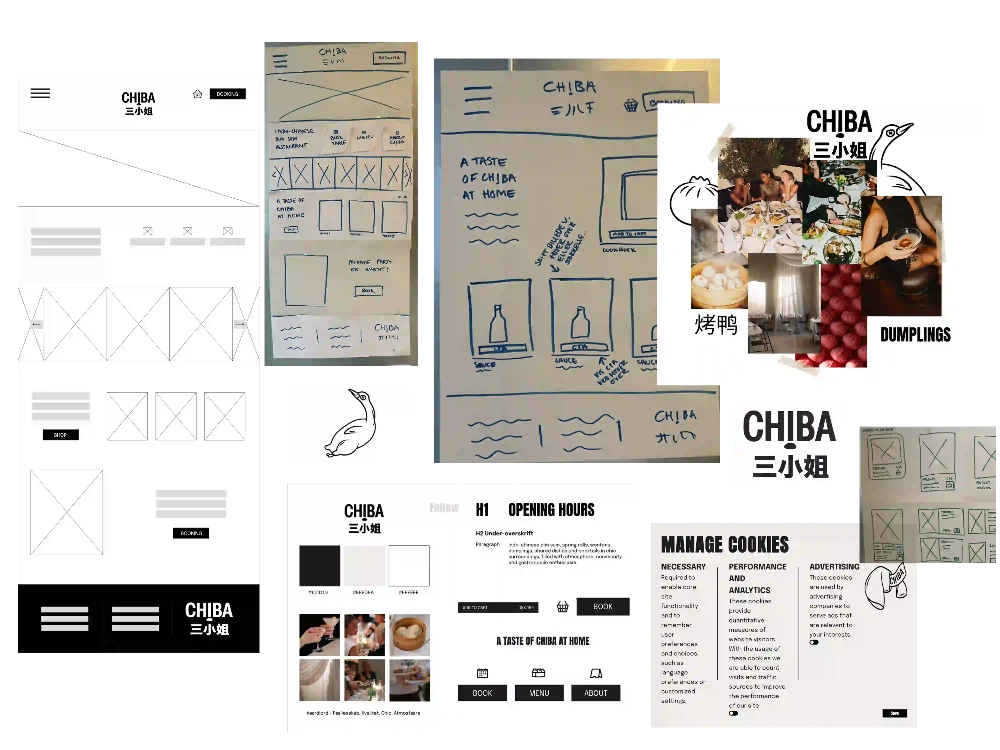
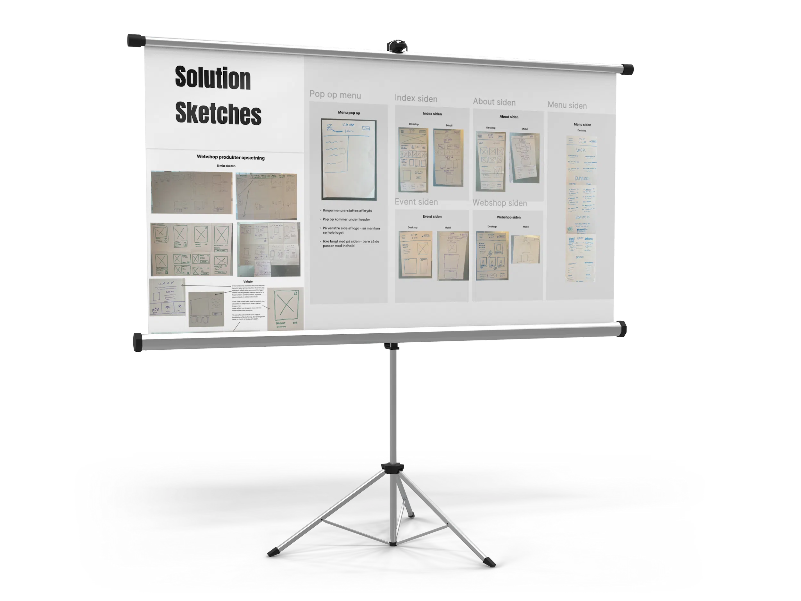

Redesign af Chiba
Se hjemmesiden her


Opgave:
I en gruppe skulle vi samarbejde med en virksomhed og redesigne deres eksisterende hjemmeside.
Løsning:
Løsningen blev udviklet i samarbejde med den indokinesiske restaurant CHIBA. Under arbejdet fandt vi et misforhold mellem ejerens ønskede vision og det deres hjemmeside formidlede. Det centrale element, som manglede, var følelsen af fællesskab. Dette løste vi ved at implementere nyt visuelt indhold i form af billeder, som vi selv tog på restauranten, og som understøtter en mere autentisk og inkluderende stemning.

Proces:
Efter vi havde valgt CHIBA, startede vi med desk research, hvor vi kiggede på konkurrenter og deres hjemmesider for at få en fornemmelse af markedet. Derefter gennemgik vi CHIBAs nuværende hjemmeside, besøgte restauranten flere gange, tog billeder og interviewede ejeren. Her blev det klart, at hendes vigtigste værdier er kvalitet, personlighed, fællesskab og minimalisme, og at målgruppen er mode- og stilbevidste personer. Ud fra disse indsigter lavede vi et moodboard og arbejdede med Crazy 8-skitser, som dannede grundlag for de endelige skitser. Bagefter lavede vi wireframes, en styleguide og testede sitet på brugere. Til sidst kodede vi hjemmesiden i HTML, CSS og JavaScript, hvor hvert gruppemedlem stod for sin egen side.
Se proces i Figma her
Feedback og refleksion:
Sammenlignet med den gamle hjemmeside har den nye løsning større fokus på brugervenlighed, struktur og responsivt design. Projektet blev rost for et sammenhængende visuelt udtryk, men feedbacken pegede også på, at tidligere test og færre komplekse løsninger kunne have styrket resultatet yderligere.
Læring:
Gennem opgaven har jeg fået erfaring med gruppearbejde og samarbejde med en ekstern virksomhed, med fokus på kommunikation og forventningsafstemning. Jeg har arbejdet med GitHub som samarbejdsværktøj og fået forståelse for branches og merge i en fælles kodebase. Derudover har jeg opnået erfaring med indholdsproduktion, fotografering og billedredigering samt opbygning af en 404-side. Projektet har også styrket mine evner inden for formidling og dokumentation af design- og udviklingsprocesser og givet mig en bedre forståelse for samspillet mellem brugeroplevelse, design, teknologi og indhold.
